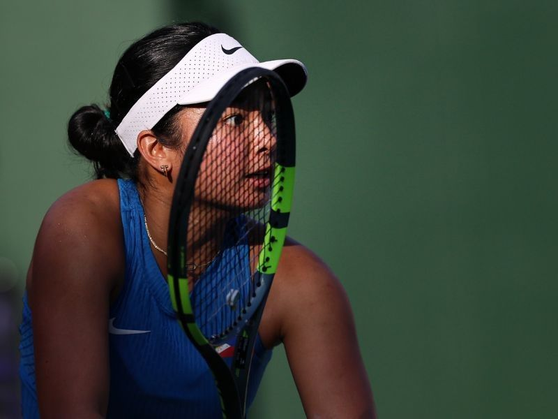
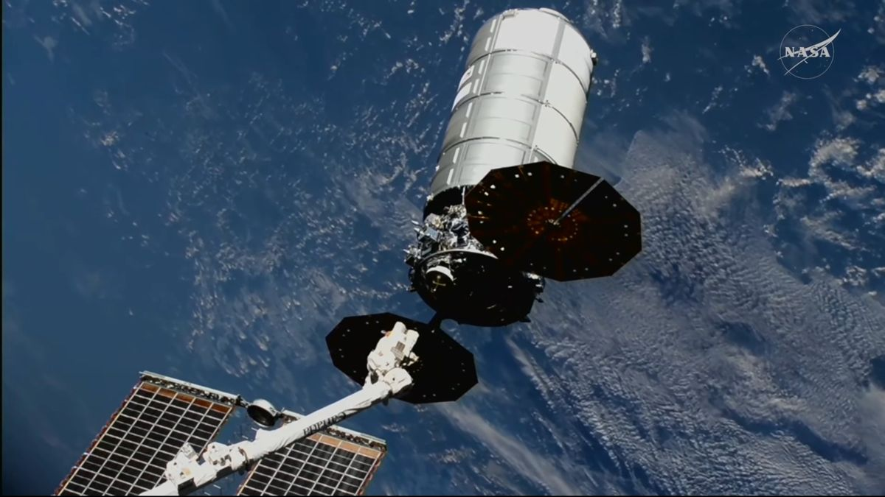

Houthi attacks on Riyadh airport kill three Saudis, including a pilot; coalition vows a “firm” response
9 Oct 2026
CNBC: Two strikes on King Khalid International Airport led to hundreds of cancelled flights Thursday; Saudi authorities say operations returned to normal the next day. The coalition says it destroyed three Houthi launchers. Trump said the US will not strike Iran before the 3 Nov midterms; Brent eased to about $103.
Open CNBC
US sanctions the International Criminal Court itself; the court calls it “an assault on the rule of law”
9 Oct 2026
BBC: After sanctioning 17 judges and officials, Washington now targets the court as an institution, aiming to cut off its finances. UN chief Guterres called it a serious blow to international justice; the Netherlands, the host state, says the court’s work will be badly affected.
Open BBC
ISW: Ukraine’s “Operation Vivaldi” on the Lyman axis breaks Russia’s plan to encircle the rest of Donetsk
9 Oct 2026
Euronews: The counter-offensive retook up to 176 sq km and pushed Russian units onto the defensive north-east of Sloviansk. Al Jazeera reports Russian strikes killed 22 in Pryluky on 7 Oct and at least 30 on two buses in Kramatorsk on 8 Oct.
Open Euronews
Trump clears Russian diesel for world markets; Zelensky calls it a “gift to Putin”
9 Oct 2026
BBC: Trump says Putin will release 300,000 tonnes now, 500,000 in November and a million after; the US Treasury issued a temporary licence. Zelensky says easing sanctions prolongs the war. Brent stays above $103, against about $73 before the Iran war.
Open BBC
DepEd brings career exploration to Kindergarten to Grade 3 with the CD4C toolkit
8 Oct 2026
Daily Tribune: DepEd and SEAMEO INNOTECH turned over the Career Development for Children toolkit for the Homeroom Guidance Program: four volumes of lessons, teacher guides, materials, career-day activities and videos. The aim is self-awareness and confidence, not early career choices. Parent ops: ask your child’s adviser when homeroom career activities start.
Open Daily Tribune
DepEd, CHED and TESDA add guidance-counselor scholarships and ladderized school-to-work pathways
9 Oct 2026
Gennews / PIA: At the joint meeting in Dumaguete, the agencies highlighted LINGAP graduate scholarships for guidance and counseling staff and launched the LAPIT index on gaps in learners’ pathways and ILEEP, routes from senior high and tech-voc to jobs besides the four-year college path.
Open Gennews
Swedish twin study: family factors explain much of the screen-time and mental-health link, but gaming and social browsing still flag risk
Oct 2026
Karolinska Institutet: Comparing twins, much of the link between screen time and teen mental health traced to shared family factors; interactive use such as gaming and social browsing stayed associated with later depression and anxiety. Home ops: watch what kind of screen time, not just how many hours.
Open Karolinska Institutet

Alex Eala trains in Wuhan ahead of the WTA 1000 from 12 Oct; PHILTA says no WTA fine for skipping Beijing
9 Oct 2026
Philstar: World No. 18 Eala lands in China after Asiad bronze and an early Singapore exit. PHILTA told a Senate hearing the WTA will not enforce the $10,000 penalty for missing the mandatory China Open, since she played for country in an Olympic qualifier.
Open Philstar
Carlos Yulo sets sights on the Rotterdam Worlds, 17–25 Oct, with brother Eldrew
9 Oct 2026
Journal News: At the Heroes’ Welcome for Team Pilipinas medalists, the two-time Asiad gold medalist (floor, vault) said he wants experience and a podium in Rotterdam; Eldrew, Asiad bronze on high bar, is also bound for the Worlds.
Open Journal News

Cygnus XL “S.S. Steven R. Nagel” departs the ISS after six months; CRS-35 Dragon targets 13 Oct
9 Oct 2026
Space.com / NASA: Canadarm2 released the freighter at 12:44 a.m. PH Saturday; it will burn up on reentry with thousands of pounds of trash. SpaceX’s CRS-35 cargo Dragon targets no earlier than Tuesday, 13 Oct, with about 6,300 lb of supplies.
Open Space.com
NASA and DOE sign a space nuclear pact; Isaacman says the first Moon Base element launches in December
9 Oct 2026
Payload: The agreement speeds work on SR-1 Freedom, a nuclear-electric spacecraft for Mars no earlier than 2028, and a lunar fission reactor by 2030. Near-monthly robotic Moon missions follow from early 2027.
Open Payload
Garmin launches the Enduro 4 ultraperformance watch at $899.99
Oct 2026
Garmin: Solar charging, up to 320 hours of GPS activity tracking, stamina tools and 64GB of storage; Android Authority notes the price is unchanged from the Enduro 3. The Approach S72 golf watch launched alongside.
Open Garmin